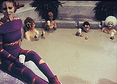
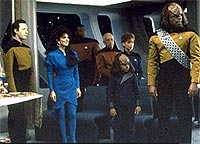
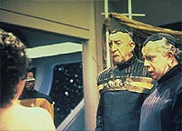
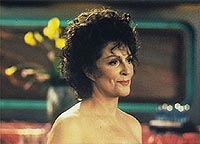
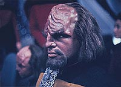

|
MANCHETE
DO EPISÓDIO
Episódio
catastrófico sobre deveres
vs. desejos traz de volta Lwaxana Troi
Episódio
anterior | Próximo
episódio
Sinopse:
Data Estelar: 45733.6.
Após destruir um asteróide no campo Pelloris, a Enterprise ruma
para o sistema Moselina sem saber que uma nuvem de estranhas partículas
se prendeu ao casco da nave. Ao longo da viagem, a mãe de Deanna
Troi, Lwaxana, se transporta a bordo com um anúncio incomum --ela
planeja se casar na Enterprise, com um homem que nem sequer conhece
ainda. Deanna acha as notícias perturbadoras, mas Lwaxana ri de sua
preocupação.
 A
conselheira, paralelamente, tem trabalhado com Worf e seu filho
Alexander, que andaram discutindo recentemente por causa da desobediência
do menino. Em uma das sessões de aconselhamento, Lwaxana conhece
Alexander, por quem acaba se apegando. Ela o convence a não cumprir
seu compromisso com Deanna e em vez disso acompanhá-la até o
holodeck. Lá, ela o leva para uma visita a uma colônia de
artistas, poetas e livres pensadores, onde eles tomam um banho de
lama. Troi e Worf, enquanto isso, começam a procurar pelo menino, o
que os leva ao holodeck.
Deanna, irritada, pede a sua mãe que pare de interferir com a educação
de Alexander. O assunto muda para o casamento de Lwaxana, e Deanna
fica chocada ao descobrir que sua mãe, tão apegada a seus
costumes, não fará o casamento no estilo Betazóide, em que a
noiva deve se apresentar nua, para usar um vestido cedido por seu
noivo. Enquanto isso, pequenos defeitos começam a ocorrer a bordo
da nave, e Geordi e Data descobrem que seções mecânicas da nave
estão sendo transformadas em uma substância gelatinosa. Enquanto
eles reportam suas descobertas a Picard, Riker e Worf, a Enterprise
entra em alerta vermelho, quando outros sistemas cruciais da nave
começam a falhar.
 Mais
tarde, o pretendente de Lwaxana, o ministro Campio, se transporta a
bordo junto com seu pomposo mestre de protocolos. Lwaxana se
desanima um pouco pelo extremo afastamento imposto pelo noivo, uma
vez que a ficha de compatibilidade dos dois se encaixava
perfeitamente, não indicando nenhum dos problemas que ela
encontrou. Ela fica chateada com os planos complicados para o
casamento e volta para o holodeck com Alexander, para a insatisfação
de todos. De volta à engenharia, Geordi descobre as estranhas partículas
que se prenderam à nave, indicando que são elas o problema mecânico
que tem afetado os sistemas.
Mais defeitos interrompem a visita de Lwaxana e Alexander ao
holodeck, e ela calmamente leva o menino para fora de perigo.
Enquanto isso, Geordi e Data dizem a Picard que as partículas são
na verdade parasitas que foram à Enterprise depois que o asteróide
do qual elas se alimentavam foi destruído. Elas precisam voltar ao
campo Pelloris para se livrar das partículas, mas o tempo está
acabando.
Os parasitas rapidamente atingem os sistemas de suporte de vida, e a
tripulação inteira, à exceção de Data, perde a consciência.
Correndo contra o relógio, Data alcança o campo Pelloris e emite
as partículas para um novo asteróide. Com tudo de volta ao normal,
o casamento de Lwaxana começa --mas é interrompido logo no começo,
quando ela vai até o altar nua, de acordo com suas tradições,
para o repúdio do noivo e seu mestre de protocolos, que partem em
seguida. Deanna fica feliz ao saber que sua mãe se prendeu a seus
costumes e mais tarde as duas, Worf e Alexander vão ao holodeck
para um último banho de lama.
Comentários:
 É
embaraçoso ter de comentar um episódio como "Cost of
Living". O grande problema de falar algo sobre ele é que
ele não dá brecha para um elogio sequer. A história é boa?
Definitivamente não, se é que há alguma história real sendo
abordada aqui. Os personagens estão bem escritos? Definitivamente não.
A idéia é criativa? Não. O episódio é emocionante? Não.
Imprevisível? Não. Interessante? Não. Filosófico? Não. Poético?
Não.
Alguns processos mentais ainda não esclarecidos levaram os
roteiristas da série a conceber este episódio. Analisando bem a
fundo, podemos até ter um vislumbre do que se trata: a dicotomia
"vontade" versus "obrigação". Tanto Alexander
quanto Lwaxana estão enfrentando este dilema, quando precisam
escolher entre se apegar às tradições e deveres (com Alexander é
a obediência a seu pai, com Lwaxana é o cumprimento dos protocolos
de casamento) ou à sua vontade, baseada no bem-estar e no
entretenimento.
Se em termos lógicos é possível associar os dois personagens, em
termos dramáticos, é algo impensável. Por mais que seja possível
traçar um paralelo entre os dois ao longo da história, as situações
são muito diferentes, e Alexander ainda é uma criança, deixando
seu livre arbítrio numa situação muito mais delicada do que no
caso de Lwaxana.
 Tirando
a própria bobeira da premissa em si, sua execução deixa a
desejar. Não há um único fator interessante na história toda.
Normalmente, quando a Enterprise tenta um procedimento para resolver
um problema, ele acaba não dando certo inicialmente, o que adiciona
emoção ao episódio. Aqui, o plano para se livrar dos parasitas
funciona exatamente como o previsto. O cúmulo da falta de
criatividade.
Detalhe: é muito cômodo pensar que só se livrando dos tais
parasitas o problema está resolvido. Mas e quanto aos danos que
eles já causaram? Sem uma tripulação para corrigi-lo, os sistemas
de suporte de vida continuariam tão inoperantes quanto antes. Ou
seja, fica muito claro que esta é apenas mais uma trama adicionada
para dar "emoção" e um senso de urgência (totalmente
sem sucesso aqui).
Aliás, a ordem de importância dos elementos está invertida aqui.
Enquanto a premissa dos parasitas poderia ser até mais
desenvolvida, dando a eles mais do que o caráter de "falsa
encrenca", a dupla Alexander/Lwaxana deveria ser reduzida a uma
subtrama sem importância do episódio --no máximo.
 E
por falar em Lwaxana, a mãe de Deanna está mais chata do que nunca
neste episódio. Nos outros, apesar da futilidade das histórias que
envolviam a personagem, ela ao menos conseguia arrancar um ou duas
risadas da audiência. Aqui, nem um sorriso ela consegue tirar do público.
Em resumo, "Cost of Living" é um episódio para
ser esquecido, possivelmente o ponto mais baixo da quinta temporada
e seguramente um dos piores da série.
Citações:
Riker - "She
thinks the honor of giving away the bride should fall on you."
("Ela acha que a honra de entregar a noiva deveria cair sobre
você.")
Picard - "Permission for on-board wedding is granted, Number
One. Nothing will please me more than to give away Mrs. Troi."
("Permissão para casamento a bordo está concedida, Imediato.
Nada irá me dar mais prazer que entregar a sra. Troi.")
Trivia:
 Para a alegria dos fãs de Majel Barrett ela está de volta com sua
infame personagem Lwaxana Troi neste episódio. Lwaxana estava
sumida desde o episódio "Half a Life",
da quarta temporada.
Para a alegria dos fãs de Majel Barrett ela está de volta com sua
infame personagem Lwaxana Troi neste episódio. Lwaxana estava
sumida desde o episódio "Half a Life",
da quarta temporada.
Repare no momento logo após a saída de Lwaxana do holodeck quando
ela conversa com o computador da Enterprise. Majel Barrett na
verdade conversa com ela mesma, já que faz a voz do computador em
todos os episódios.
E
para a felicidade dos não-fãs de Majel Barrett, Lwaxana agora
somente será vista no episódio "Dark Page", da sétima
temporada da Nova Geração.
Ficha
técnica:
Escrito por Peter Allan Fields
Direção de Winrich Kolbe
Exibido em 20/04/1992
Produção: 120
Elenco:
Patrick Stewart como
Jean-Luc Picard
Jonathan Frakes como William Thomas Riker
Brent Spiner como Data
LeVar Burton como Geordi La Forge
Michael Dorn como Worf
Gates McFadden como Beverly Crusher
Marina Sirtis como Deanna Troi
Elenco convidado:
Majel
Barrett-Roddenberry como
Lwaxana Troi
Brian Bonsall como Alexander
Tony Jay como Campio
Carel Struyken como o Sr. Homm
David Oliver como um jovem
Albie Selznick como Juggler
Patrick Conin como Erko
Tracey D'Arcy como uma jovem
George Edie como o poeta
Episódio
anterior | Próximo
episódio
|